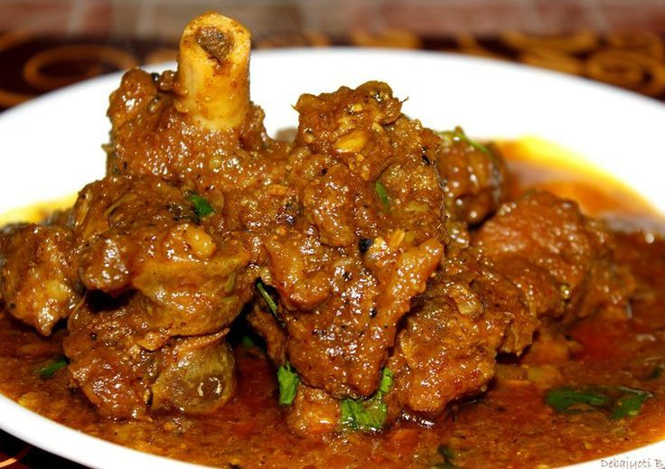

Mutton curry:-

Description
Cooking Time:-
Preperation Time: 45 Min Cook Time: 20 Min Total Time: 1 hr 10 Min
Ingrediants:-
1.Oil/ Ghee
2. Daalchini(1), Bari Ilaichi(1), 2-3 kali mirch
3. Onions (6-8 finely chopped)
4. Green chillies (3-4)and tomatoes(2)
5. Mutton(1kg)
6. Kashmiri mirch(1 tsp), mutton masala(1-2tsp), chicken masala(1tsp)
7. Salt(2 tsp), Turmeric powder(1tsp), red chillie powder(1tsp) and coriander powder(3tsp)
8. Ginger and Garlic paste( 1-2tsp)
Directions
- 1. Firstly heat the pressure cooker then add oil or ghee as per your taste. As the oil gets heated add daal chini , bari ilaichi and kali mirch.
- 2. When it turns brown add finely chopped onion with green chilies and tomatoes. ( You can also make paste of all three and use , it makes food look rich).
- 3. After tossing for 2-3 min. Add all the masalas with ginger garlic paste. (Masala includes salt, coriander powder, red chillie powder and Turmeric powder) and stir it till u see the redish texture and oils coming above the masalas.
- 4. After masalas are cooked for 5-7 min. Add washed mutton into it and then cook it for 45 min. keep stirring it within 10-10 min. First cook on high flame for 15 min. Then add chicken masala, mutton masala and kashmiri mirch and mix it properly after that decrease the flame and cook on low flame for around 25 min. Between remember to stirr .
- 5. After 40-45 min. Your mutton will be cooked 80% then add water as per you like. i personally like fried with less water so water you can add accordingly. Close the pressure cooker and wait for 2 whistle on high flame and after that turn off the burner. Wait till the air from pressure cooker comes out then after open the cooker and you can add finely chopped coriander leaves over it to give it a beautiful look and now its ready to be served..